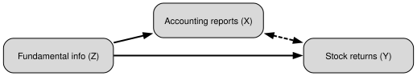
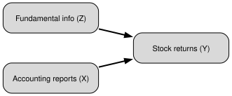
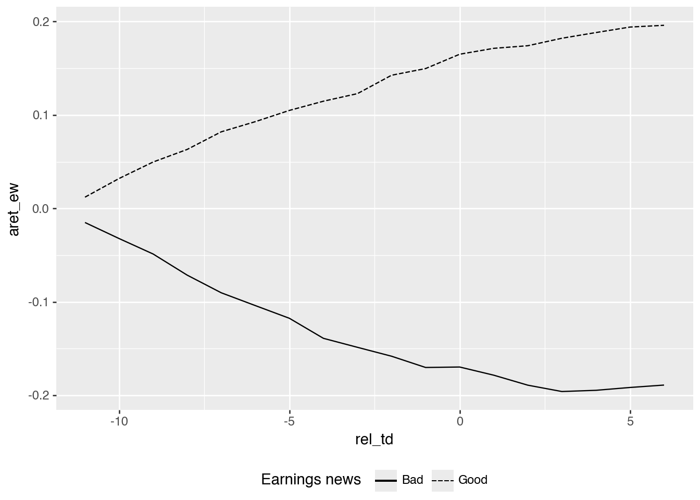
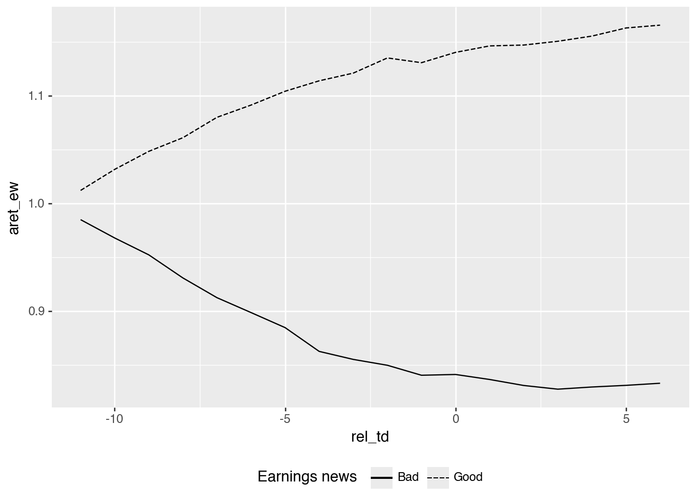
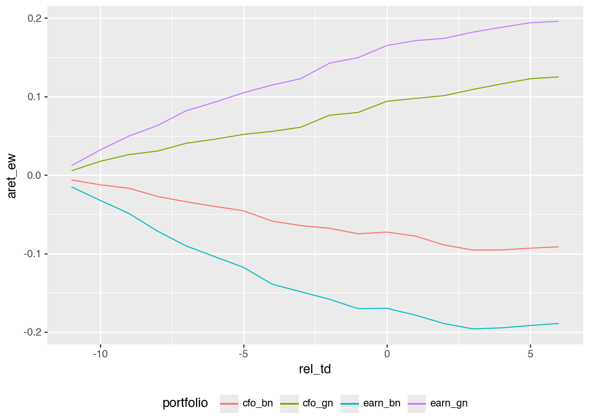
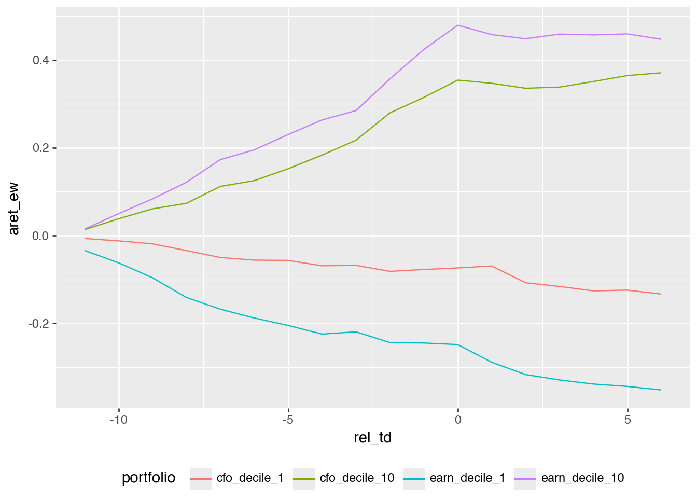
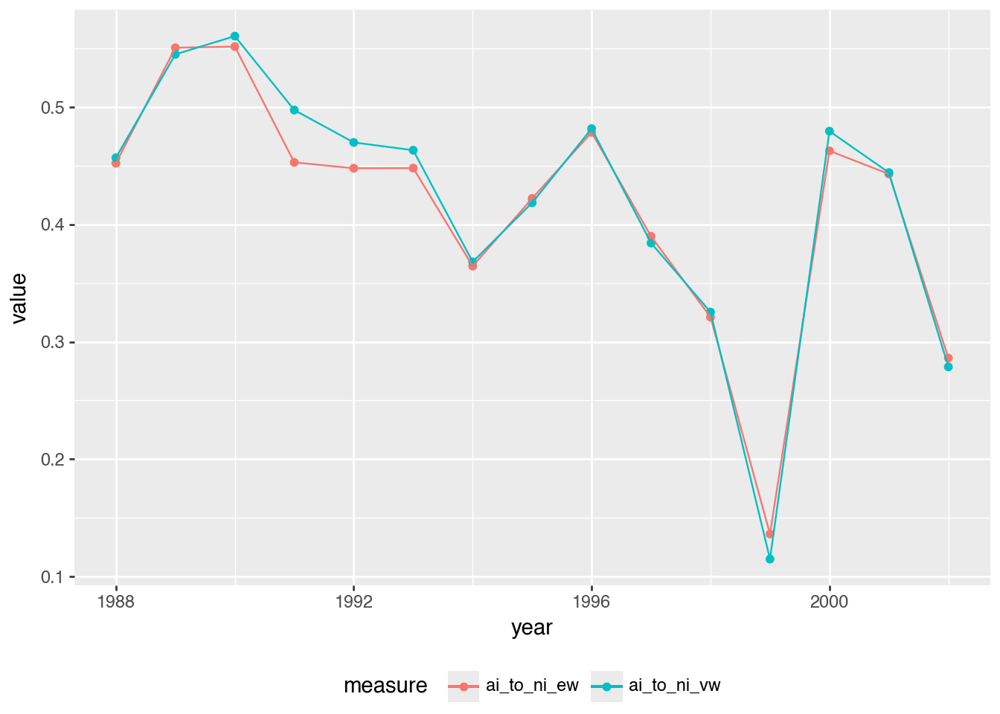

Solutions for Ball and Brown (1968)
Updated Python Polars solutions
Accounting research
Replication
Python
Polars
These solutions accompany the Ball and Brown (1968) chapter of Empirical Research in Accounting: Tools and Methods. This notes edition updates the solutions discussed in the original 2026-05-12 post with subsequent corrections and clarifications; it is not a facsimile of the original LinkedIn attachment. The calculations were freshly executed on 26 October 2026.
The calculations use a local Parquet repository, with DATA_DIR pointing to that repository. See the book’s data setup instructions and the accompanying Python requirements. The QMD uses the existing era_pl_sols Jupyter kernel, whose environment supplies those packages; its code does not import either solutions repository. Changes in the input data or software can change estimates and timings.
1 Principal results of Ball and Brown (1968)
1.1 Discussion questions
- What is the research question of Ball and Brown (1968)? Do you find the paper to be persuasive?
There are a number of possible answers here. One answer is that the paper examines whether accounting numbers are meaningful in a way that seems necessary (but not sufficient) for a claim that they are useful. This is (by design) a fairly limited question, but one that is counterposed to a claim that accounting numbers are meaningless.
Relative to the limited question that it asks, the evidence in Ball and Brown (1968) seems quite persuasive.
- What do you notice about the references in Ball and Brown (1968, pp. 177–178)?
The striking thing for me is how recent (at that time) most of the references are. Most come from 1964 or later. Clearly this was an exciting time to be doing empirical accounting research.
- Given that “the most fundamental result” of Ball and Brown (1968) relates to an association or correlation, is it correct to say that the paper provides no evidence on causal linkages? Does this also mean that Ball and Brown (1968) is a “merely” descriptive paper according to the taxonomy of research papers outlined in Chapter 4? How might the results of Ball and Brown (1968) be represented in a causal diagram assuming that accounting information is meaningful and markets are efficient? Would an alternative causal diagram be assumed by a critic who viewed accounting information as meaningless?
One possible causal diagram is given in Figure 1.
Note that there is no solid directed arrow connecting \(X\) and \(Y\) here. Clearly, if markets are efficient (so do not respond to useless or meaningless information) then an arrow from \(X\) to \(Y\) would imply that accounting information is useful.
But arguably Ball and Brown (1968) only seek to show that accounting information is meaningful in that it is driven by fundamental information in a way that is correlated with how fundamental information affects share prices. This will lead to accounting reporting being associated with stock returns (represented as a dashed line), which is precisely what Ball and Brown (1968) find.
One alternative causal diagram would be Figure 2, which has accounting reports directly causing stock returns but having no connection to fundamental information. In an efficient market, reports without connection to fundamental information should have no effect on returns, so finding an association between returns and such reports would imply market inefficiency.

Under the taxonomy in Chapter 4, I would not classify BB68 as merely descriptive. Its association is used to assess an explanation in which underlying economic information causes both accounting earnings and returns. That is a causal interpretation involving a common cause, even though it does not identify the causal effect of publishing an accounting report on prices. The empirical association by itself cannot establish that particular causal explanation; its force depends on the assumptions about reporting and market efficiency.
- Describe how Figure 1 of Ball and Brown (1968) supports each of principal results identified by Ball and Brown (2019).
Ball and Brown (2019, p. 414) identify three main results of Ball and Brown (1968): “The most fundamental result was that accounting earnings and stock returns were correlated. … Nevertheless, annual accounting earnings lacked timeliness. … After the earnings announcement month, the API (which cumulated abnormal returns) continued to drift in the same direction.”
The first result (correlation) is shown by the divergence of the two lines for each variable in Figure 1. The second result (limited timeliness) is evidenced by most of the separation occurring before \(t = 0\). This does not require a literally zero announcement response: much of the information has already been reflected in prices. The third result is evinced by the lines appearing to continue to diverge further after \(t = 0\).
- Consider the causal diagrams you created above. Do the results of Ball and Brown (1968) provide more support for one causal diagram than the other?
The results provide more support for the diagram in which accounting reports reflect fundamental information. If accounting reports were unrelated to fundamentals, an efficient market should not price them. The evidence is not a clean causal test, but it is difficult to reconcile with a strong claim that accounting income is meaningless.
- Compare Figure 1 of Ball and Brown (2019) with Figure 1 of BB68. What is common between the two figures? What is different?
Both figures show divergence between good-news and bad-news portfolios, and both show evidence consistent with post-earnings announcement drift. The Ball and Brown (2019) figure suggests somewhat more information being conveyed around the earnings announcement, while still showing that much of the return movement occurs before the announcement. The Ball and Brown (2019) lines are also constructed to be mirror images after subtracting their average; the BB68 lines are not.
- What does “less their average” mean in the title of Figure 1 of Ball and Brown (2019)? What effect does this have on the plot? (Does it make this plot different from Figure 1 of BB68? Is information lost in the process?)
It means that, in each period, the average of the two plotted series is subtracted from each series. This centers the plot and makes the lines symmetric. That differs from Figure 1 of BB68 because the separate levels of the good-news and bad-news lines are no longer visible. Some information is lost, as while the transformation preserves the spread, the two original paths are lost.
- Ball and Brown (2019, p. 418) say “in this replication we address two issues with the BB68 significance tests.” Do you understand the points being made here?
Clearly, “no” is a possible answer here. If you answered “yes”, then hopefully you explained that the statistical significance tests in Ball and Brown (1968) used \(\chi^2\) statistics for each month from \(t-11\) to \(t+6\). However, the hypotheses more clearly relate to the pre-announcement, announcement, and post-announcement periods, not to individual months. Hence, the Ball and Brown (2019) approach of aggregating data from these periods makes sense.
The second difference is that they use randomization inference to evaluate significance. Randomly reassigning news groups constructs an empirical null distribution rather than relying on the original monthly tests. This does not automatically make a test robust to every form of time-series or cross-firm dependence. See the discussion of randomization inference.
- Ball and Brown (2019, p. 418) also say “the persistence of PEAD over time is evidence it does not constitute market inefficiency.” What do you make of this argument?
This is an unconventional argument to be sure. Persistence could mean the anomaly reflects risk, limits to arbitrage, trading costs, or some other rational mechanism. But persistence alone does not establish that PEAD is not an inefficiency. We will return to this topic when we study PEAD in Chapter 14.
- What is the minimum amount of information that our hypothetical genie needs to provide to enable formation of the portfolios underlying TI, NI, and II? What are the rules for construction of each of these portfolios?
| Measure | Information from the genie | Rule |
|---|---|---|
| TI | The sign of each stock’s monthly abnormal return | Choose the favorable direction separately each month. |
| NI | The sign of each stock’s compounded abnormal return over months \(-11\) through \(0\) | Choose a long or short direction once at the start and retain it. |
| II (called AI here) | The sign of each stock’s annual income surprise | Choose the direction once at the start: long for good income news, short for bad news. |
The relevant returns are abnormal returns, not raw returns. BB68’s indexes abstract from market effects and begin with equal amounts assigned to each stock; II uses equal initial exposure per firm, rather than allocating one half of the capital to each news group irrespective of their sizes. TI allows the direction to change each month, while NI and II fix it for the 12-month period. As returns accumulate, the values of individual positions can change, so equal initial amounts do not mean equal position values throughout the year. The genie supplies no magnitudes or rankings needed to optimize unequal initial allocations. For II, the income information must be supplied before the investment window, making this an informational thought experiment rather than a feasible trading strategy.
- Ball and Brown (1968) observe a ratio of NI to TI of about 0.23. What do we expect this ratio to be? Does this ratio depend on the information content of accounting information?
A simple illustrative model is a coin game in which a correct guess wins $1 and an incorrect guess loses $1. Independent, equally likely wins and losses let us compare knowing every monthly outcome with knowing only the sign of their annual total. This is an additive, equal-magnitude approximation, not an exact model of compounded stock returns.
If we have 12 coin tosses, the information we can use for TI is the outcome of each toss. As such, TI should give us $12. The information we can use for NI is whether there are more heads (in which case we would bet “heads” on each toss) or more tails. We can use the get_ni function below to work out the value of NI in this coin game.
def get_ni(n_tosses):
n_heads = np.arange(n_tosses + 1)
prob = np.fromiter(
(math.comb(n_tosses, int(x)) for x in n_heads),
dtype=float,
)
prob = prob / prob.sum()
value = n_heads - (n_tosses - n_heads)
return float((prob * np.abs(value)).sum())
get_ni(12) / 120.2255859375This is almost exactly the ratio implied by values reported in Ball and Brown (1968): \(0.2257 \approxeq 0.165 / 0.731\). This ratio does not depend on the information content of accounting information. It’s not clear that this ratio is relevant to the research questions of Ball and Brown (2019). Its agreement with the toy calculation can be interpreted as some evidence consistent with market efficiency under the analogy’s assumptions, rather than as a general or uniquely identifying prediction.
- Consider the paragraph in Ball and Brown (2019, p. 418) beginning “an innovation in BB68 was to estimate …”. How do the discussions of these results differ between Ball and Brown (1968) and Ball and Brown (2019)?
While Ball and Brown (1968) does talk about portfolios, the main difference seems to be in how the two papers describe the portfolio construction. By 2019, constructing hedge (long-short) portfolios had become a common part of research examining how capital markets process information. But in 1968, the approach used in Ball and Brown (1968) was novel. In fact, the calculation of the ratio of II to NI is a rather astounding innovation relative to research at the time (consider the innovative FFJR study, published in 1969).
- Consider column (4) of Table 2 of Ball and Brown (2019). Is an equivalent set of numbers reported in BB68? What is the underlying investment strategy associated with this column?
Not exactly. We can calculate it for the entire sample period of Ball and Brown (1968) as \(1.060 - 0.914 = 0.146\). This appears to be lower than the value in most years reported in Table 2 of Ball and Brown (2019).
The underlying investment strategy involves going long in the good news firms and short the bad news firms1
BB68’s Table 5 reports pooled net-income-model APIs at month \(-1\), rather than a year-by-year column of these portfolio spreads. The \(0.146\) calculation illustrates that pooled spread; it is neither a year-specific reproduction of the later paper’s Table 2 nor the original BB68 AI statistic. A long position in an equal-weighted good-news portfolio and an equally sized short position in a bad-news portfolio compares two group averages. BB68’s AI calculation additionally weights groups by their numbers of firm-year observations. The strategy also uses future earnings signs before they are available, so this is an informational thought experiment with lookahead, rather than a feasible pre-announcement trading rule. Month \(-1\) is only the closest monthly comparison to the later paper’s more precisely defined daily event boundary.
- Heading 6.3 of Ball and Brown (2019) is “Does ‘useful’ disprove ‘meaningless’?” Do you think that “not meaningless” implies “not useless”? Which questions (or facts) does BB68 address in these terms?
I would say that “not meaningless” is a necessary, but not sufficient, condition for “not useless”. Ball and Brown (1968) seem content with a “not meaningless” conclusion, leaving “not useless” to future research (arguably they had done enough for one paper already).
2 Replicating Ball and Brown (1968)

2.1 Exercises
- From the data below, we see that the upper bound for the tenth decile is about US$544 billion. How can we reconcile this with the existence of firms with market capitalizations over US$1 trillion? Bonus: Using data from
crsp.msf, identify the firm whose market capitalization was US$544 billion in December 2020? Why do we need to group bypermco, notpermno, to find the answer? (Hint: For the bonus question, you can use data fromcrsp.msfandcrsp.stocknames. Why do we need to group bypermco, notpermno, to find the answer?)
(
me_breakpoints_raw
.filter(pl.col("month") == pl.date(2020, 12, 1))
.collect()
)| month | decile | cutoff |
|---|---|---|
| 2020-12-01 | 1 | 327.37 |
| 2020-12-01 | 2 | 772.82 |
| 2020-12-01 | 3 | 1464.26 |
| 2020-12-01 | 4 | 2466.2 |
| … | … | … |
| 2020-12-01 | 7 | 9723.16 |
| 2020-12-01 | 8 | 17140.12 |
| 2020-12-01 | 9 | 37015.1 |
| 2020-12-01 | 10 | 543614.58 |
co_names = (
stocknames
.sort("permco", "namedt")
.group_by("permco")
.agg(comnam=pl.col("comnam").last())
)
top_stocks = (
msf
.filter(pl.col("date") == pl.date(2020, 12, 31))
.with_columns(mktcap=pl.col("prc").abs() * pl.col("shrout") / 1000)
.join(
stocknames
.select("permno", "permco")
.unique(),
on="permno", how="inner")
.group_by("permco", "date")
.agg(
totmktcap=pl.col("mktcap").sum(),
n_stocks=pl.len(),
)
.filter(pl.col("totmktcap") >= math.floor(max_cutoff))
.join(co_names, on="permco", how="inner")
.sort("totmktcap")
.collect()
)
top_stocks| permco | date | totmktcap | n_stocks | comnam |
|---|---|---|---|---|
| 540 | 2020-12-31 | 543614.57524 | 2 | "BERKSHIRE HATHAWAY INC DEL" |
| 54084 | 2020-12-31 | 657222.96 | 1 | "META PLATFORMS INC" |
| 53453 | 2020-12-31 | 677340.152983 | 1 | "TESLA INC" |
| 41593 | 2020-12-31 | 707732.98458 | 13 | "VANGUARD INDEX FUNDS" |
| … | … | … | … | … |
| 15473 | 2020-12-31 | 1.6382e6 | 1 | "AMAZON COM INC" |
| 8048 | 2020-12-31 | 1.6784e6 | 1 | "MICROSOFT CORP" |
| 37493 | 2020-12-31 | 1.8526e6 | 306 | "ISHARES TRUST" |
| 7 | 2020-12-31 | 2.2323e6 | 1 | "APPLE INC" |
This firm is “BERKSHIRE HATHAWAY INC DEL”. Note that the cut-offs provided by Ken French are for “NYSE stocks that have a CRSP share code of 10 or 11 and have good shares and price data” and “exclude closed end funds and REITs”. There are larger stocks, but these are not listed on the NYSE (e.g., Microsoft and Apple are listed on the NASDAQ).
There are two classes of stock for Berkshire Hathaway, so we need to add these to get the total market capitalization. Each class will have its own permno, but will share a permco with the other class.
- To keep things straightforward, we focused on firms that have returns for each month in the \((t - 11, t+ 6)\) window. Can you tell what approach Nichols and Wahlen (2004) took with regard to this issue?
It is not clear from Nichols and Wahlen (2004) exactly what they did. Our restriction makes the plot easier to interpret because every event contributes a complete event-window return path, but it may also discard valid partial histories.
- Table 2 of Nichols and Wahlen (2004) measures cumulative abnormal returns as the “cumulative raw return minus cumulative size decile portfolio to which the firm begins.” Apart from the use of a size-decile portfolio rather than some other market index, how does this measure differ from the Abnormal Performance Index (API) defined on p.168 of Ball and Brown (1968)? Adjust the measure depicted in the replication of Figure 1 to more closely reflect the API definition used in Ball and Brown (1968). Does this tweak significantly affect the results? Which approach seems most appropriate?
Ball and Brown (1968) instead accumulate monthly abnormal returns. Each approach is feasible (conditional on having a genie supply the income information needed), but implies different strategies for reweighting the market index over time. It seems that Ball and Brown (1968) will involve more trading to rebalance the market side of the portfolio, so may be more costly to implement in practice.
alt_plot_data = (
merged
.filter(pl.col("ret").is_not_null())
.with_columns(
aret_ew=pl.col("ret") - pl.col("ew_ret"),
aret_vw=pl.col("ret") - pl.col("vw_ret"),
)
.sort("gvkey", "datadate", "rel_td")
.with_columns(
cs.starts_with("aret").add(1)
.cum_prod().over("gvkey", "datadate")
)
.group_by("rel_td", "earn_gn")
.agg(cs.starts_with("aret").mean())
.with_columns(
pl.when(pl.col("earn_gn"))
.then(pl.lit("Good"))
.otherwise(pl.lit("Bad"))
.alias("Earnings news")
)
.collect()
)As can be seen in Figure 4, making this tweak does not materially change the qualitative pattern in the figure.
(
alt_plot_data
.ggplot(
aes(x="rel_td", y="aret_ew",
linetype="Earnings news",
group="Earnings news")
)
.geom_line()
.add_theme(legend_position="bottom")
)
The baseline difference of buy-and-hold returns is
\[\prod_m(1+r_{jm})-\prod_m(1+r^b_{jm}),\]
whereas a BB68-style API averages firm-level products of monthly abnormal gross returns:
\[API_M=\frac{1}{N}\sum_j\prod_{m=-11}^{M}(1+r_{jm}-r^b_{jm}).\]
Subtracting one from the API aligns its starting value with an abnormal-return series starting at zero. These quantities generally differ because subtracting a compounded benchmark is not the same as compounding monthly differences. The persistence of good/bad-news separation in the plot is a qualitative comparison, not a statistical test of equality between the methods. For a fixed stock-versus-benchmark buy-and-hold comparison, the first measure has the clearer interpretation. For reproducing BB68’s API and its AI/NI calculations, the monthly-abnormal-return product is the relevant definition. The choice should follow the intended investment or informational comparison.
- Create an alternative version of Figure 3 using the sign of “news” about cash flows in the place of income news. Do your results broadly line up with those in Panel A of Figure 2 of Nichols and Wahlen (2004)? Do these results imply that accounting income is inherently more informative than cash flows from operations? Why or why not?
The four curves in Figure 5 broadly follow the ordering in Panel A of Nichols and Wahlen’s Figure 2. The larger separation between the income-news portfolios suggests a stronger return association in this sample under these definitions of news. It does not establish that accounting income is inherently more informative than cash flows from operations. Accrual accounting can reduce timing noise in cash receipts and payments, making income a better measure of current performance in some settings. The comparison also depends on the expectations model, firms, periods, and return window. Separate sorts place different firms in the good- and bad-news portfolios; they do not hold the other signal constant. Cash flows may add to information in income, and vice versa. An incremental-information analysis would examine both signals together; these plots alone do not establish a universal ranking or a causal disclosure effect.
Note that I make a small portfolio_plot_data() function that creates a portfolio variable that is a string that can be used to label a plot, as seen in Figure 5.
def portfolio_plot_data(signal):
return (
plot_data_raw
.group_by("rel_td", signal)
.agg(cs.ends_with("ret").mean())
.with_columns(
aret_ew=pl.col("ret") - pl.col("ew_ret"),
aret_vw=pl.col("ret") - pl.col("vw_ret"),
portfolio=pl.when(pl.col(signal))
.then(pl.lit(signal))
.otherwise(pl.lit(signal.replace("_gn", "_bn"))),
)
.select("rel_td", "portfolio", "aret_ew", "aret_vw")
)
plot_data_news = pl.concat([
portfolio_plot_data("cfo_gn"),
portfolio_plot_data("earn_gn"),
]).collect()(
plot_data_news
.ggplot(
aes(x="rel_td", y="aret_ew", color="portfolio")
)
.geom_line()
.add_theme(legend_position="bottom")
)
- Create an alternative version of the figure above focused on the extreme earnings deciles in place of the good-bad news dichotomy. Do your results broadly line up with those in Panel B of Figure 2 of Nichols and Wahlen (2004)?
In the code below, I use pl.concat() to stack two data frames—one for extreme deciles of earnings news and one for extreme deciles of cash-flow news—to create plot_data_extreme.
plot_data_extreme = (
pl.concat([
(
plot_data_raw
.filter(pl.col("earn_decile").is_in([1, 10]))
.group_by("rel_td", "earn_decile")
.agg(cs.ends_with("ret").mean())
.with_columns(
aret_ew=pl.col("ret") - pl.col("ew_ret"),
aret_vw=pl.col("ret") - pl.col("vw_ret"),
portfolio=pl.when(pl.col("earn_decile") == 10)
.then(pl.lit("earn_decile_10"))
.otherwise(pl.lit("earn_decile_1")),
)
.select("rel_td", "portfolio", "aret_ew", "aret_vw")
),
(
plot_data_raw
.filter(pl.col("cfo_decile").is_in([1, 10]))
.group_by("rel_td", "cfo_decile")
.agg(cs.ends_with("ret").mean())
.with_columns(
aret_ew=pl.col("ret") - pl.col("ew_ret"),
aret_vw=pl.col("ret") - pl.col("vw_ret"),
portfolio=pl.when(pl.col("cfo_decile") == 10)
.then(pl.lit("cfo_decile_10"))
.otherwise(pl.lit("cfo_decile_1")),
)
.select("rel_td", "portfolio", "aret_ew", "aret_vw")
),
])
.collect()
)It is then easy to plot the data in plot_data_extreme to create Figure 6.
(
plot_data_extreme
.ggplot(aes(x="rel_td", y="aret_ew", color="portfolio"))
.geom_line()
.add_theme(legend_position="bottom")
)
The results broadly line up with Panel B of Figure 2 in Nichols and Wahlen (2004). Using extreme deciles produces a cleaner spread than simply splitting at zero, which is what we would expect if the magnitude of the earnings or cash-flow surprise matters.
- Calculate AI by year following the formula on p. 175 of Ball and Brown (1968) (there denoted as \(II_0\)).
api_returns = (
merged
.filter(pl.col("ret").is_not_null())
.with_columns(
api_ew=pl.col("ret") - pl.col("ew_ret"),
api_vw=pl.col("ret") - pl.col("vw_ret"),
)
.sort("gvkey", "datadate", "rel_td")
.with_columns(
pl.col("api_ew", "api_vw").add(1)
.cum_prod().over("gvkey", "datadate").sub(1)
)
.filter(pl.col("rel_td") == 0)
.select("gvkey", "datadate", "year", "earn_gn", "api_ew", "api_vw")
.collect()
)
ai_data = (
api_returns
.with_columns(news_sign=pl.when(pl.col("earn_gn")).then(1).otherwise(-1))
.group_by("year")
.agg(
ai_ew=(pl.col("news_sign") * pl.col("api_ew")).mean(),
ai_vw=(pl.col("news_sign") * pl.col("api_vw")).mean(),
)
.sort("year")
)
ai_data| year | ai_ew | ai_vw |
|---|---|---|
| 1988 | 0.115339 | 0.116284 |
| 1989 | 0.166923 | 0.164199 |
| 1990 | 0.198726 | 0.203671 |
| 1991 | 0.163895 | 0.185409 |
| … | … | … |
| 1999 | 0.098588 | 0.082749 |
| 2000 | 0.214325 | 0.241051 |
| 2001 | 0.183881 | 0.18344 |
| 2002 | 0.107628 | 0.104399 |
AI weights every firm equally; it is not an equal-weighted average of two news-group means when their counts differ. The stock-level API increments use the assigned compounded-monthly-abnormal-return definition.
- Calculate NI by year following the formula on p. 175 of Ball and Brown (1968) (there denoted as \(NI_0\)).
ni_data = (
api_returns
.group_by("year")
.agg(
ni_ew=pl.col("api_ew").abs().mean(),
ni_vw=pl.col("api_vw").abs().mean(),
)
.sort("year")
)
ni_data| year | ni_ew | ni_vw |
|---|---|---|
| 1988 | 0.255044 | 0.254519 |
| 1989 | 0.303139 | 0.301249 |
| 1990 | 0.360228 | 0.363337 |
| 1991 | 0.361835 | 0.372625 |
| … | … | … |
| 1999 | 0.723941 | 0.720743 |
| 2000 | 0.463129 | 0.50265 |
| 2001 | 0.415014 | 0.412924 |
| 2002 | 0.376163 | 0.37465 |
- Using the data on NI and AI from above, create a plot of \(AI/NI\) like that in Figure 2 of Ball and Brown (2019). Do you observe similar results to those shown in Figure 2 of Ball and Brown (2019)?
Credit for this question goes to Philip Brown. I start by joining the NI and AI data calculated in the responses to the previous questions. I then calculate both value-weighted and equal-weighted versions of the ratios, then .unpivot() the data so that it is easier to plot both series on one plot.
ai_ni_data = (
ni_data
.join(ai_data, on="year", how="inner")
.with_columns(
ai_to_ni_ew=pl.col("ai_ew") / pl.col("ni_ew"),
ai_to_ni_vw=pl.col("ai_vw") / pl.col("ni_vw"),
)
.unpivot(
on=["ai_to_ni_ew", "ai_to_ni_vw"],
index="year",
variable_name="measure",
value_name="value",
)
)In Figure 7, we see similar results to those in Figure 2 of Ball and Brown (2019), but not exactly the same numbers in each year. For example, we have less volatility in the ratio in our data and 1999 (the peak of the “dot-com boom”) is more clearly an outlier in our data.
(
ai_ni_data
.ggplot(aes(x="year", y="value", color="measure"))
.geom_point()
.geom_line()
.add_theme(legend_position="bottom")
)
3 References
Ball, R., Brown, P., 2019. Ball and Brown (1968) after fifty years. Pacific-Basin Finance Journal 53, 410–431. https://doi.org/10.1016/j.pacfin.2018.12.008
Ball, R., Brown, P., 1968. An empirical evaluation of accounting income numbers. Journal of Accounting Research 6, 159–178. https://doi.org/10.2307/2490232
Nichols, D.C., Wahlen, J.M., 2004. How do earnings numbers relate to stock returns? A review of classic accounting research with updated evidence. Accounting Horizons 18, 263–286. https://doi.org/10.2308/acch.2004.18.4.263